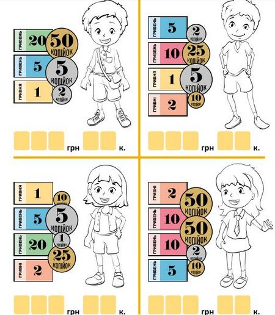

Плетення кошиків (до с. 48-49 підручника)
Виготовлення бандури (до с. 48-49 підручника)
Ліплення іграшок з глини (до с. 48-49 підручника)
Корисні завдання
Це завдання допоможе дитині в ігровій і наочній формі покращити та закріпити математичні навички додавання й порівняння величин і чисел. Оскільки у завданні пропонується підрахувати гроші, дитина матиме можливість переконатись у практичному значенні й користі вміння виконувати арифметичні дії. За умовами завдання, дитині треба порахувати гроші, які є в кожного з чотирьох намальованих дітей, і визначити, хто з них має більше (можна порівнювати хлопчиків, дівчат або ж усіх чотирьох дітей).
Пісня Наталії Май “Сорочинський ярмарок”
Сорочинський ярмарок на Полтавщині: «Україна – єдина родина»
Творча майстерня: виготовляємо яскраві поробки (до с. 51 підручника)
Діти відновлюють послідовність створення поробок, отримують технологічну карту для їх виготовлення
Смачна математика (до с. 55 підручника)
Закріплюємо вміння дітей додавати в межах 5 на нестандартних прикладах